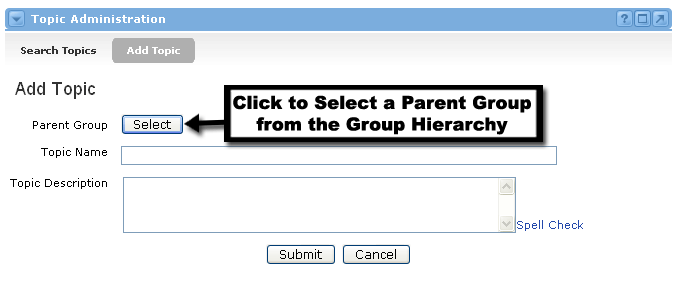
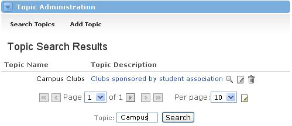
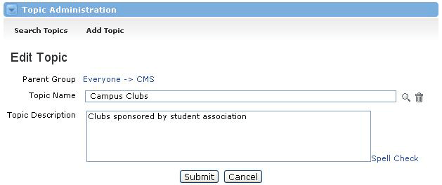
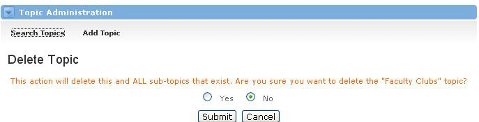

Topic Administration Channel
Looking for more help options? Click Here
Topic Administration : Managing Topics
This channel allows you to add, edit, or delete all topics. Examples of Topics can range from courses to clubs to departments at your institution. Offerings, on the other hand, are specific sub-groups of Topics. An Offering can be a specific class section of a course, a specific group within a club, or a campus department that reports to a higher department. So when you add a new Topic, you're setting the foundation under which many Offerings can be created.
Add Topic - This view allows the user to add a new topic. The user will be asked to select a Parent Group and enter a Topic Name and Description.
Search Topics- This link allows you to search for and view all of the topics. Once you have located a topic the following buttons are listed in the Topic Description column for each topic to enable you to view, edit and delete topics.
Clicking one of these buttons will only affect the topic next to it.
 - This will commit the entire channel window to one specific topic. This can be helpful if the topic name or description is lengthy. You can also click on the text of the topic's name to receive this view.
- This will commit the entire channel window to one specific topic. This can be helpful if the topic name or description is lengthy. You can also click on the text of the topic's name to receive this view.
 - This view allows the user to edit the topic name and/or description.
- This view allows the user to edit the topic name and/or description.
 - This view allows the user to delete the topic completely. Clicking the Delete Topic button prompts the user to confirm that the topic should be deleted.
- This view allows the user to delete the topic completely. Clicking the Delete Topic button prompts the user to confirm that the topic should be deleted.
Adding and Viewing Topics : Managing Topics
Adding a New Topic
To add a new Topic, follow these steps:
- Locate the Topic Administration channel and click the Add Topic option at the top of the channel.
- You will now see the Add Topic screen.
- Select a Parent Group by clicking the Select button and navigating the group hierarchy to locate the proper parent for this topic. Click submit on the group page to return to the Add Topic view.
- Type the name of the new topic in the Topic Name field.
- In the Topic Description field, write a short summary for this topic
- Click the Submit button when you are satisfied with all information.
- Your topic has been added to the Topic Administration channel.

Viewing All Topics
To view all topics that are currently in the system:
- Click the Search Topics option.
- By leaving all fields blank on the search view and submitting your search, all system topics will be returned.
- Locate the Per Page drop-down menu towards the bottom of the Topic Administration channel. If you want to display a smaller number of Topics on the page, select the number you wish to display.
- The number of Topics you selected will now be visible on the screen (if that many exist in the system).
- The arrow icons can be used to page through search results.
View, Edit and Delete a Topic : Modifying Topics
View Topic Details
To view the details of a Topic, simply follow these steps:
- In the Topic Administration window, first click the Search Topics.
- Enter the criteria for the Topic(s) you wish to view and click search.
- To view the details of a Topic, click on the topic name.
- You will now see the Topic Name, Parent Group and the Description.

Edit a Topic
To Edit a Topic follow the steps above, then do this:
- Click the Edit icon next to the name of the Topic.
- You can now edit the Topic Name and Topic Description as you desire.
- Once your changes have been made, click the Submit button.

Delete a Topic
- Locate the Topic you want to delete and click the Delete icon next to it.
- You will now see a confirmation screen. If you're sure you want to delete this Topic, select the Yes radio button and click Submit.
- You can do a quick search to confirm that the Topic has been deleted.

|
|
If there are any offerings tied to a topic, the topic cannot be deleted. The associated offerings must be first inactivated and then deleted. |